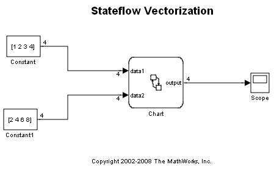
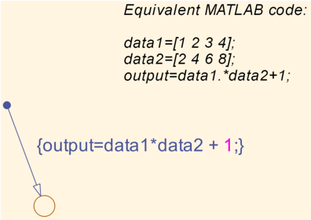
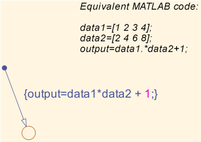
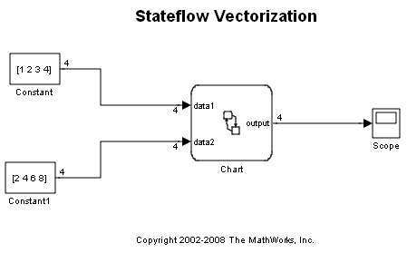
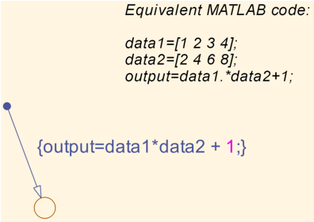

Vectorization
Stateflow® has the ability to vectorize the data inputs and perform 1-D array manipulations. In this example, the following MATLAB® code is implemented:
data1 = [1 2 3 4]; data2 = [2 4 6 8]; output = data1 .* data2 + 1;
 
 Stateflow® has the ability to vectorize the data inputs and perform 1-D array manipulations. In this example, the following MATLAB® code is implemented:
data1 = [1 2 3 4]; data2 = [2 4 6 8]; output = data1 .* data2 + 1;
 